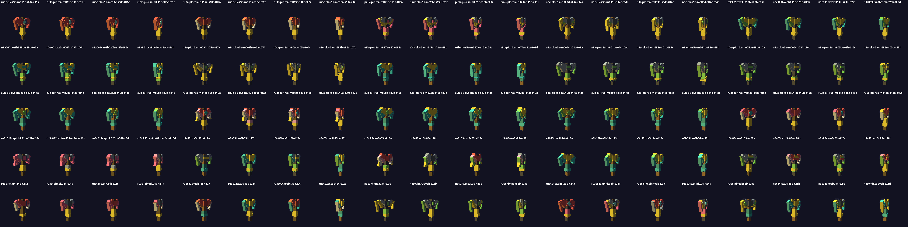
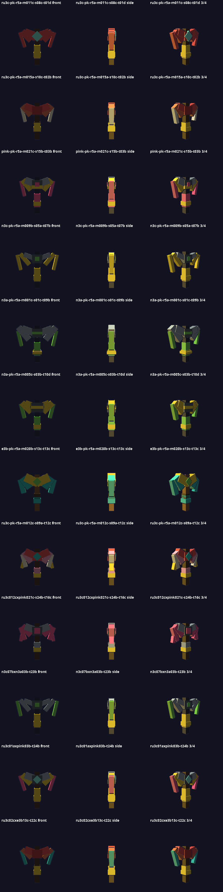
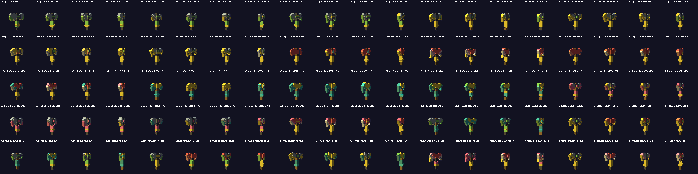
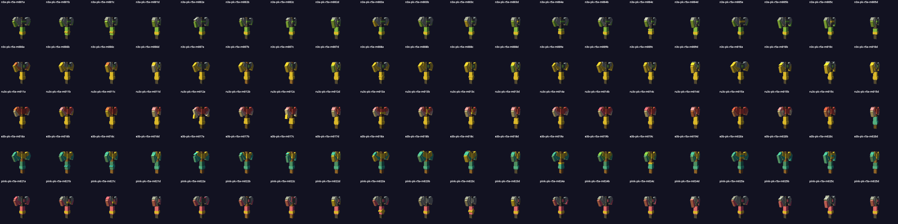
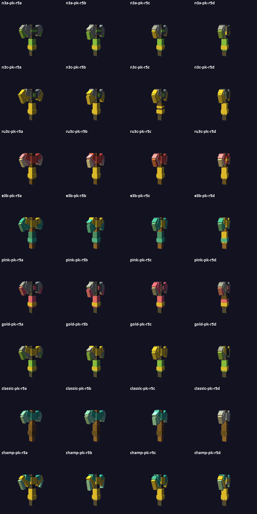
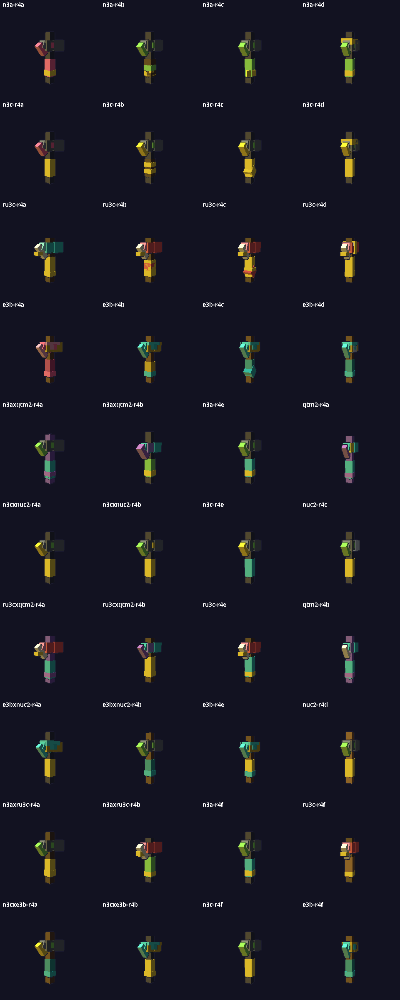
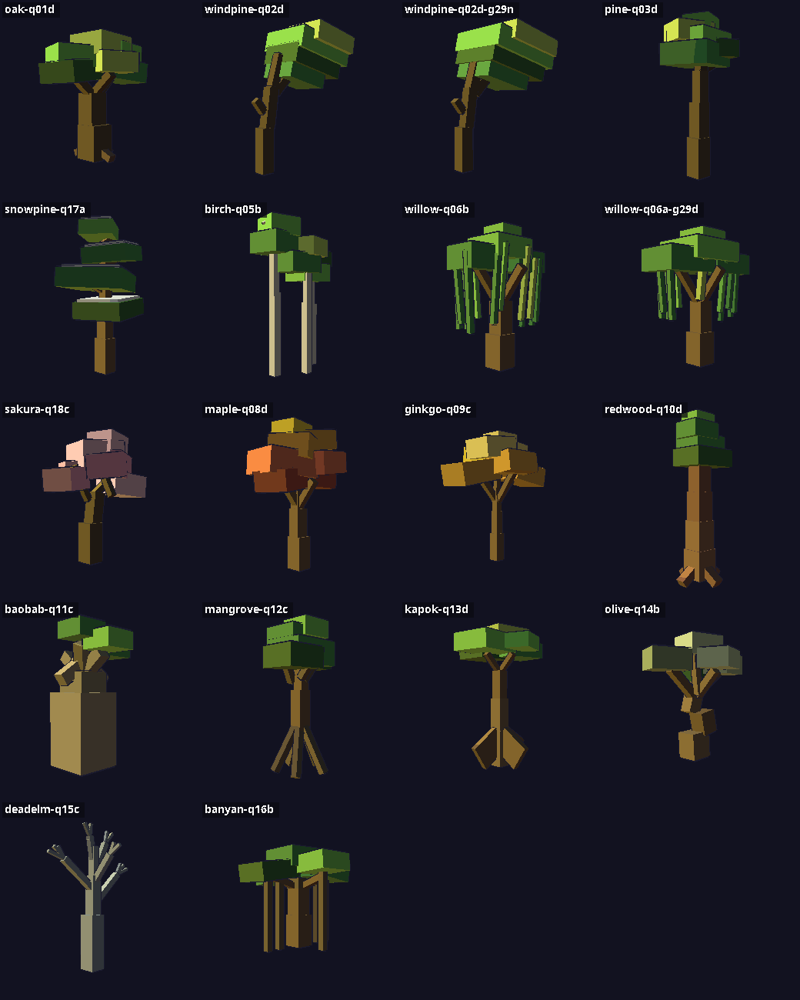
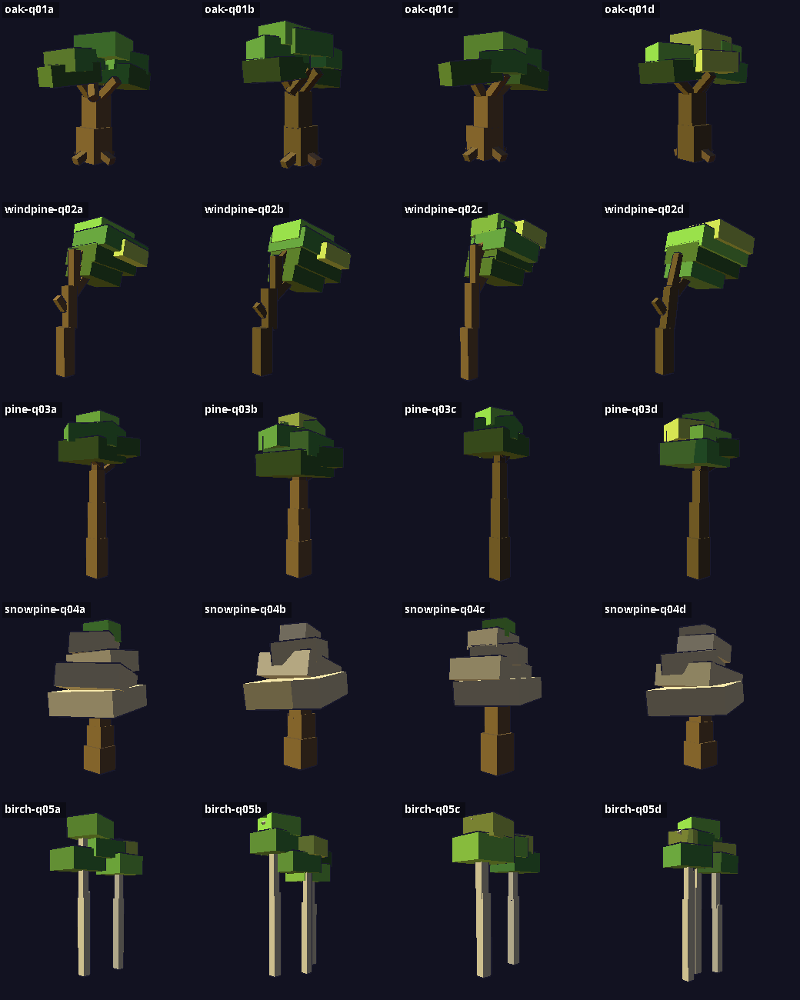
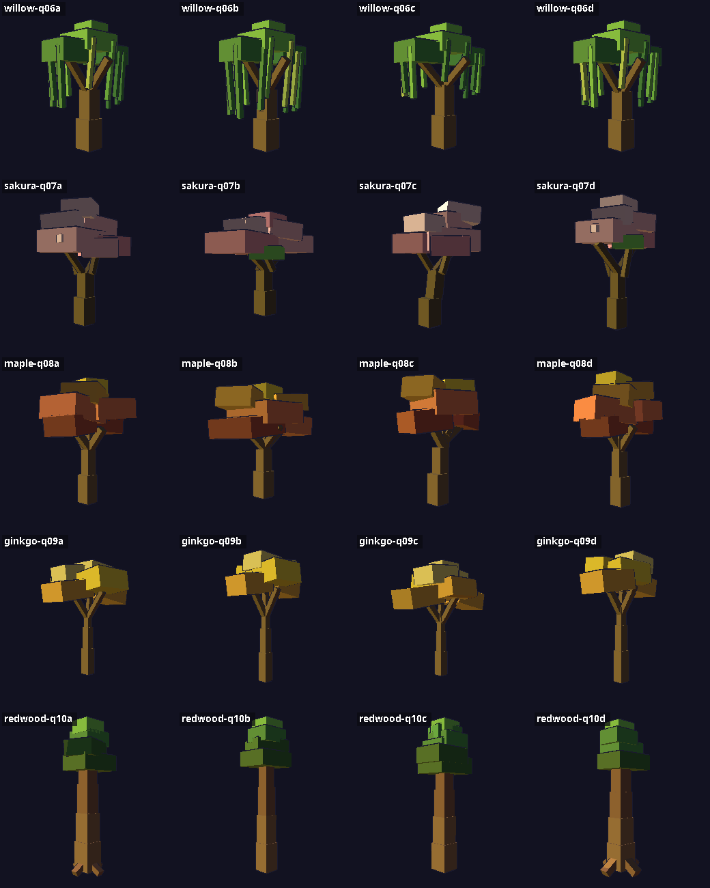

● COMPLETE
⛏️ Pickaxe Training — Round 8: LONG BLADES (final round)
The 25-workers × 3-rounds run is done. Round 8 took the best schemes from rounds 6–7 and bred in Deep Rock Galactic-length blades — the points are now the longest head segment, hanging well below the mount, like the real references. 25 workers, 100 models, scored by Onion.
Round 8 results: mean score 4.50 / 5 — the best round of the run. 51 models scored 5/5. Lesson of the run: one well-aimed anatomical fix beats another generation of color shuffling.

100 models · prescreen 100/100 survived · blade ends hang 0.13–0.19 below the mount (old stubby tips: 0.07)
🏆 Final pool — 12 champions (Boo picks the DEEPDELVE pickaxe)
One per flavor line: ruby+gem · sunset gradient · pink/gold · hazard widest · nuclear · gilded arc · emerald elite · ruby wide-hook · pink elite · steel sweep · most varied · teal-on-warm.

Round 7 (previous)
Mean 3.96 / 5 — the first round judged against real pickaxe examples (Minecraft + Deep Rock Galactic): stubby tips capped at 4, so only 8 long-blade models hit 5/5. 25 workers, 100 models.

Round 6
Mean 4.40 / 5 · 40 models at 5/5 · 25 workers, 100 models bred from the round-5 winners.

Round 5
Mean 3.94 / 5 · Boo's correction round — rounds 1–4 were hammer-shaped; round 5 rebuilt every winning scheme on a real pickaxe skeleton. Winners: n3a-pk-r5a · n3c-pk-r5a · e3b-pk-r5a · gold-pk-r5a · classic-pk-r5a.

Round 4 (the hammer era)
Mean 3.88 / 5 · winners: n3a-r4a · n3a-r4d · n3c-r4a · n3cxe3b-r4b

🌲 Trees — HQ Round (higher-quality game standard)
Boo's order: no Minecraft — model trees like Kena, Ghost of Tsushima and Valheim do. Structure trunks, limbs carrying layered 3-tone canopies, off-axis crowns. 18 designers × 4 = 72 trees across 16 real archetypes, judged on a harsher rubric where the entire old 1,390-model tree line caps at 3/5. Round results: mean 3.70 / 5 · 41 models at game standard (4+) · 6 ship-grade 5s (ancient oak, 2 windswept pines, 2 willows, grey dead elm). Snow pines and sakura failed first pass and were redesigned — snow as thin white caps over green tiers, sakura brighter and cloudier. A bred generation of 48 proved cross-family breeding dilutes designs; both of its 5s were single-parent mutations.

🏆 The 18 champions — the canonical DEEPDELVE forest set: oak · windswept pine ×2 · forest pine · snow pine · birch pair · willow ×2 · sakura · maple · ginkgo · redwood · baobab · mangrove · kapok · olive · dead elm · banyan.

